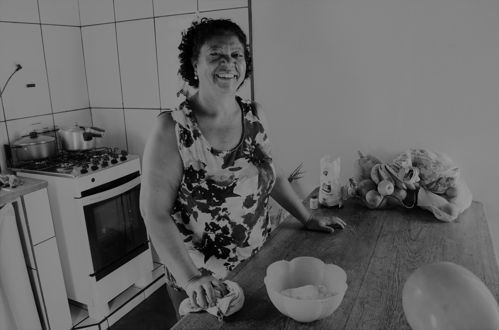

Quem é ela?
Nascida e criada no interior do Maranhão em uma região de seca e com pouca infraestrurura, Maria de Nazaré da Costa, mais conhecida como Nazaré, enfrentou desde cedo as dificuldades da vida. É a 11.ª filha de 12 filhos. As oportunidades de estudar eram poucas onde vivia, mas mesmo assim conseguiu frequentar até a 4.ª série do ensino básico, naquele momento era o nível máximo que existia para se alcançar, onde ela vivia com sua família.
No final dos anos 70 conheceu um rapaz, caminhoneiro, lá do interior de São Paulo, chamado Antonio e mais conhecido como Toninho Botelho, e então começava a partir daí, a etapa da história que acabaria resultando em um grande amor entre os dois. Nazaré decide embarcar na viagem de desbravar o Brasil, sendo a co-piloto e braço direito e do Toninho. Dado um certo momento, tendo em vista a necessidade da ida das crianças à escola, buscam pouso em uma cidade pequena no interior de SP e ali, começam a se estabelecer.
"O conhecimento e a educação, são os maiores bens que minhas filhas podem ter para a vida delas."
Foi por meio de cursos e formações na área de costura e modelagem que Nazaré encontra a possibilidade de se profisssionalizar, trabalhando por muitos anos como costureira em uma confecção de camisas, na mesma cidadezinha no interior de São Paulo, onde vive até hoje, mas sem seu companheiro Toninho, que infelizmente já se foi. Se dedicou muito a educação de suas filhas, que ela e Toninho tiveram, e apesar do pouco estudo, sempre foi uma incentivadora e apoiadora incondicional para os estudos e aprendizagem das meninas. Nazaré foi catequista durante muitos anos na cidade em que vive. Participa ativamente de grupos de atividades da comunidade e não para nunca. Por onde passa, leva seu carisma e alegria.
Nazaré é sem dúvida, uma mulher Maravilhosa! Uma mãe que sempre mostrou ás suas filhas que o lugar de mulher é onde elas quiserem! É sinônimo de coragem e força! Um orgulho para sua família! 💜